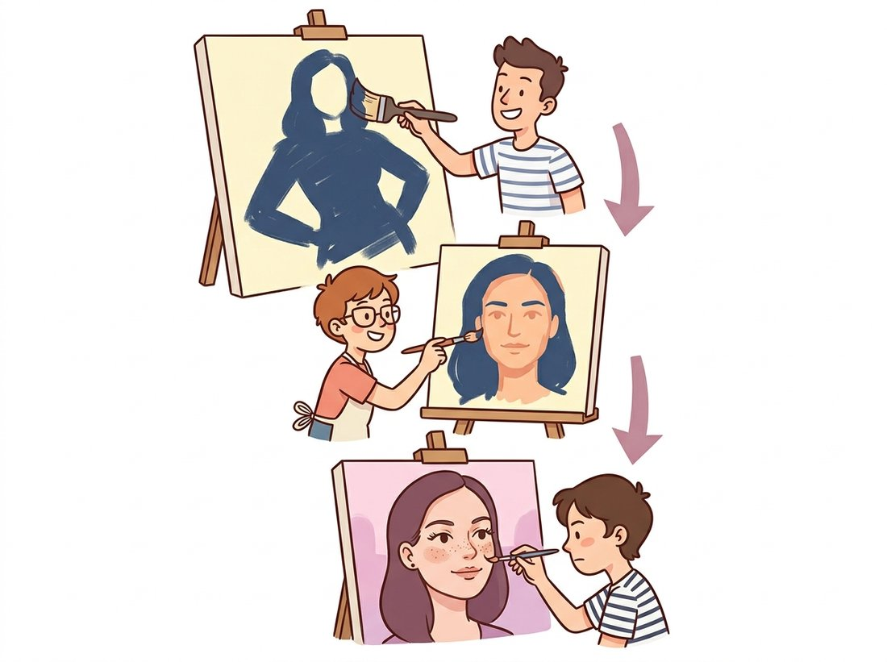

"One latent tried to remember the whole portrait at once: the pose, the freckles, the glint in the eye. It got the gist and smudged the rest. So we hired a committee, one for the silhouette, one for the cheeks, one for the eyelashes, and finally the face came back."
A Hierarchy of Latents That Learned to Delegate
A single latent layer must encode global layout and fine texture in the same vector, and that overload is the main reason plain VAE samples look blurry; hierarchical VAEs split the code into a stack of latents at different scales, so coarse structure and fine detail each get their own home. The architecture mirrors an idea you already know: the image pyramids of Chapter 4 and the feature hierarchies of Chapter 20, now applied to latent variables. Making a deep stack of latents actually trainable took two key ingredients. The ladder VAE introduced a bidirectional inference path that couples a bottom-up encoder pass with a top-down generative pass, so the upper latents receive a useful learning signal. NVAE and the very deep VAEs added the depth-stabilizing engineering, residual latent cells, careful normalization, and spectral regularization, that let the stack grow to dozens of layers without diverging. The payoff is image quality that, for the first time, made VAEs competitive with GANs and diffusion.
In Section 31.3 and Section 31.4 the latent was a single flat vector. That design has a structural limit: every aspect of an image, from "this is a face seen in three-quarter view" down to "this eyelash curls slightly," must be packed into one code and decoded in one shot. Maximum likelihood with a Gaussian decoder then averages over the fine details it cannot pin down, which is why VAE faces come out soft. A hierarchy fixes this by giving the model multiple latent layers, top latents for global decisions and bottom latents for local detail, with each conditioned on the ones above. This section builds that idea up from the flat VAE. The illustration below pictures the hierarchy as a coarse-to-fine painting team.

1. Why One Latent Layer Is Not Enough Intermediate
Consider what a single 20-dimensional code must do for a face image. It has to specify pose, identity, lighting, expression, hairstyle, and every fine texture, all in twenty numbers, and the decoder must expand all of that simultaneously. There are two failures here. First, capacity: twenty numbers cannot carry both the global plan and the local detail, so detail is sacrificed. Second, structure: the model has no way to express that "given the pose and identity (global), the eyelashes (local) follow," a conditional structure that real images obviously have. A hierarchy of latents $z_1, z_2, \ldots, z_L$ addresses both. The generative model factorizes top-down,
so the topmost latent $z_L$ is drawn from the prior and decides global structure, each lower latent is drawn conditioned on the one above and refines the picture, and the decoder finally renders the image from the bottom latent. Coarse-to-fine generation falls out naturally: the top of the stack lays out the silhouette, the bottom fills in texture, exactly the multi-resolution decomposition of a Laplacian pyramid but with learned, stochastic levels.
2. The Ladder VAE and Bidirectional Inference Advanced
Training a deep latent stack runs into a hard problem on the inference side. A naive encoder that simply mirrors the generative model bottom-up tends to leave the upper latents undertrained: the gradient signal reaching $z_L$ is weak, and those latents collapse toward the prior (the posterior collapse of Section 31.4, now striking the top of the hierarchy first). The ladder VAE solves this with a bidirectional inference path. A bottom-up deterministic pass extracts features at every level; then a top-down stochastic pass computes each latent's posterior by combining the bottom-up features with the top-down generative prediction from the layer above. In effect the encoder and the generative model share their top-down pathway, so the posterior at each level is a precision-weighted merge (precision is the inverse of variance, so a more confident, lower-variance source gets a larger weight in the blend) of "what the data says" (bottom-up) and "what the layers above expect" (top-down). This coupling is what gives the upper latents a strong, well-conditioned signal and keeps them alive. Figure 31.5.1 contrasts the flat VAE with the ladder's two coupled passes.
The next block sketches one level of a hierarchical VAE, showing how the top-down prior for a level and the bottom-up data features are combined to form that level's posterior. The full model stacks these cells; the snippet isolates the coupling that defines the ladder.
# One level of a ladder VAE: form this level's posterior by merging the
# top-down conditional prior p(z_l | z_{l+1}) with bottom-up data features.
# Stacking L of these cells, each fed bottom-up features, is the hierarchy.
import torch
import torch.nn as nn
class LadderLevel(nn.Module):
"""One level: combine top-down prior with bottom-up evidence."""
def __init__(self, dim):
super().__init__()
self.prior = nn.Linear(dim, 2 * dim) # p(z_l | z_{l+1}): mu, logvar
self.merge = nn.Linear(2 * dim, 2 * dim) # combine with bottom-up features
def forward(self, top_down, bottom_up):
p_mu, p_logvar = self.prior(top_down).chunk(2, dim=-1) # from above
q_params = self.merge(torch.cat([top_down, bottom_up], -1))
q_mu, q_logvar = q_params.chunk(2, dim=-1) # posterior
std = torch.exp(0.5 * q_logvar)
z = q_mu + std * torch.randn_like(std) # reparameterized sample
# KL between this level's posterior q and its conditional prior p:
kl = 0.5 * (p_logvar - q_logvar + (q_logvar.exp() + (q_mu - p_mu) ** 2)
/ p_logvar.exp() - 1).sum(-1)
return z, kl
# Stacking L of these, with bottom-up features feeding each level, is the
# hierarchical VAE. The per-level KL is to the CONDITIONAL prior p(z_l|z_{l+1}),
# not to N(0, I), which is the key difference from the flat VAE.3. NVAE and the Engineering of Depth Advanced
The ladder fixed the inference structure, but pushing the stack to the dozens of latent groups needed for high-resolution images exposed raw optimization instability: the KL terms across many levels are hard to balance, activations explode or vanish, and the model diverges. NVAE (2020) is the recipe that tamed this, and it is worth knowing the ingredients because the same problems recur in any very deep generative model. Three design choices carry the weight:
- Residual latent cells, built from depthwise-separable convolutions and squeeze-and-excitation blocks (the efficiency primitives of Chapter 28), so signal flows cleanly through depth as in a ResNet.
- Spectral regularization plus careful normalization, bounding the Lipschitz constant of each layer (the Lipschitz constant is the largest factor by which a layer can stretch the distance between two inputs, so bounding it caps how violently the layer can amplify a change), which keeps the KL terms smooth and prevents the sharp instabilities that otherwise kill deep VAEs.
- A residual posterior parameterization that expresses each level's distribution as a small offset from its prior, which both stabilizes the KL and counters collapse.
The companion "Very Deep VAE" work (2021) made a complementary point. A clean hierarchical VAE, made deep enough, outperforms the autoregressive PixelCNN-class models on likelihood. (PixelCNN generates an image one pixel at a time, each pixel conditioned on those already produced above and to the left.) The lesson was that depth in the latent stack, not architectural exotica, was the missing ingredient.
For years the consensus was that VAEs are inherently blurry and GANs are the only way to get crisp samples. Hierarchical VAEs falsified that. NVAE and Very Deep VAE produced samples competitive with the GANs of their day, and they did so while keeping everything the VAE is prized for: a stable likelihood-based objective, an inference network, no adversarial training, and no mode collapse. The lesson is that the blur was never fundamental to the variational approach; it was the symptom of asking one flat latent to do a multi-scale job. Give the model a latent per scale and a way to train the stack, and the sharpness returns. This insight carries directly into diffusion, which is itself a deep hierarchy of denoising steps, and into the multi-level VQ codebooks of Section 31.6.
Asking a single twenty-dimensional code to remember the pose, the identity, the lighting, the hairstyle, and every individual eyelash is like asking one frantic person to be the architect, the bricklayer, and the interior decorator on the same afternoon. The roof gets built, but the curtains come out blurry. A hierarchical VAE does the sensible managerial thing and hires a small department: a top latent that decides the floor plan, middle latents that frame the rooms, and bottom latents that fuss over the trim. The blur that everyone once blamed on the VAE's character turned out to be a staffing problem all along.
A correct hierarchical VAE is genuinely hard to implement: the bidirectional inference path, per-level KL balancing, spectral normalization, and the residual cells each have subtle failure modes, and a from-scratch attempt easily runs to hundreds of lines that train unstably. Do not start from a blank file. NVIDIA's official NVAE repository and the community Very Deep VAE implementations provide tested architectures, the exact normalization and regularization settings, and training configs for standard datasets, turning a multi-week reimplementation into a configure-and-run job. The single-level cell above exists to teach the coupling; for real high-resolution work, clone the reference, read its level-construction and KL-balancing code against this section, and adapt it. The library handles the depth-stability engineering that is the entire difficulty.
4. Where Hierarchical VAEs Sit Now Intermediate
Hierarchical VAEs occupy an important conceptual position even though pure diffusion now leads on raw image fidelity. Their deep top-down generative path, coarse latents conditioning fine ones, is structurally the same coarse-to-fine refinement that diffusion performs over time steps, and several works draw the equivalence explicitly: a diffusion model can be read as a particular very deep hierarchical VAE whose latents are the noisy intermediates and whose per-step decoders share weights. Understanding the hierarchical VAE therefore demystifies a large part of Chapter 33 in advance. In practice, the hierarchy idea persists in the multi-resolution latent designs used inside modern image and video autoencoders, and the depth-stabilization tricks NVAE introduced reappear wherever a generative stack must be trained deep. The next block shows how to read off the coarse-to-fine behavior by sampling the top latents and resampling the bottom ones.
# Read off the hierarchy's coarse-to-fine behavior: hold the top (global)
# latent fixed and resample only the lower latents, so the outputs share
# global structure but vary in fine texture, one control per scale.
import torch
# Demonstrate coarse-to-fine control in a trained hierarchical VAE.
model.eval()
with torch.no_grad():
z_top = torch.randn(1, top_dim) # fix the GLOBAL latent
variations = []
for _ in range(8):
# Resample only the lower (fine-detail) latents, keep z_top fixed.
img = model.generate(z_top=z_top, resample_lower=True)
variations.append(img)
# The 8 images share global structure (same pose/identity, set by z_top)
# but differ in fine texture (set by the resampled lower latents).
# This is the hierarchy made visible: each scale is a separate control.The hierarchical-VAE idea is alive in 2024 to 2026 wherever the data is too big for a flat latent. Modern video generators compress with spatiotemporal autoencoders that use multi-scale latents to separate slow global motion from fast local texture, the temporal analog of NVAE's spatial hierarchy, and 3D generation pipelines apply the same multi-resolution latent structure to voxel and triplane representations. The clean equivalence between a very deep hierarchical VAE and a diffusion model, sharpened in several 2021 to 2023 papers, also continues to guide the design of efficient few-step samplers, since a shallower but better-conditioned hierarchy can replace many diffusion steps. The depth-stable cell design and spectral regularization of NVAE remain part of the standard toolkit for training any deep generative stack. Hierarchy, first introduced here to fix VAE blur, became a general principle for scaling generative models, and you will see it again as the multi-scale latents of Chapter 33 and the video models of Chapter 36.
Who: a research group generating synthetic retinal scans to augment a small labeled dataset for a diabetic-retinopathy classifier, 2024. Situation: a flat VAE produced retinas with believable overall vasculature but smudged the fine microaneurysms that are the actual diagnostic signal. Problem: the synthetic images were useless for training a detector of the very features they blurred away. Decision: they switched to a two-level hierarchical VAE, letting the top latent capture global vessel layout and the bottom latent capture fine lesions, and verified with a clinician that the bottom-level samples preserved microaneurysm appearance. Result: the synthetic scans retained diagnostically relevant fine detail, and adding them to training improved the downstream classifier on rare-lesion cases. Lesson: when the signal you care about lives at a different scale than the bulk of the image's energy, a flat latent will average it away; a hierarchy that gives that scale its own latent is the principled fix, and it matters most exactly when fine detail is the point.
In a deep hierarchical VAE trained with a naive bottom-up encoder, the topmost latents are the ones most prone to collapsing toward the prior. Explain in three or four sentences why the top of the stack is the most vulnerable, in terms of how far the gradient signal must travel and how much the powerful lower layers can reconstruct on their own. Then explain how the ladder VAE's top-down pass changes this, referring to the precision-weighted merge of subsection 2.
Build a two-level hierarchical VAE for MNIST using the LadderLevel cell of subsection 2: a bottom-up convolutional encoder producing features at two resolutions, two latent levels, and a top-down generative path. Train it, then reproduce the coarse-to-fine demonstration of subsection 4: fix the top latent and resample the bottom latent several times, and display the results. Confirm that the images share global digit identity while varying in stroke detail, and compare the sample sharpness to a flat VAE with the same total latent dimension trained for the same time.
The text claims a diffusion model can be read as a very deep hierarchical VAE. Write a one-page analysis making the correspondence precise: identify what plays the role of each latent $z_l$, what the per-level conditional prior $p(z_l \mid z_{l+1})$ corresponds to, why the per-step decoders share weights, and what the ELBO of the hierarchical VAE becomes in this view. Then state one concrete consequence of the equivalence for sampling efficiency, connecting it to the few-step-sampler discussion you will meet in Chapter 33.